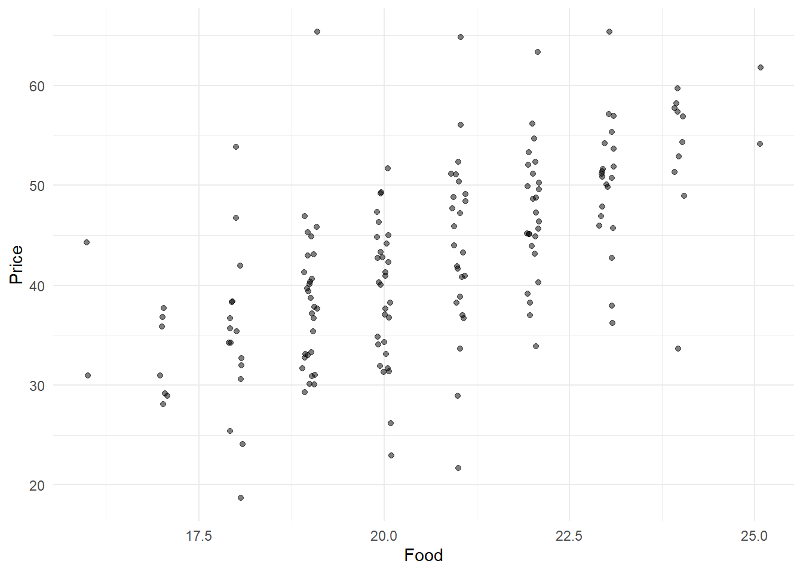
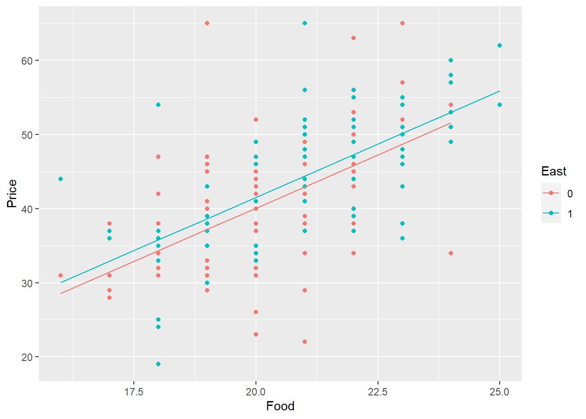

Regresión lineal
Múltiple y logística
Caso: Restaurantes italianos en NYC
Introducción
Usaremos un dataset que contiene los reviews hechos por Zagat (en 2001) a 168 restauranres italianos en New York.
Cada restaurante recibe una puntuación del 0 al 30 por la calidad de su comida, la decoración y el servicio recibido.
El dataset incluye el valor del precio medio (USD) de un plato (incluye una bebida y la propina).
Responderemos a la interrogante: ¿qué factores contribuyen al precio medio de un plato en un restaurante italiano en NYC?
Manos a la obra
¿cómo está estructurado el dataset?
FALSE Rows: 168
FALSE Columns: 7
FALSE $ Case <int> 1, 2, 3, 4, 5, 6, 7, 8, 9, 10, 11, 12, 13, 14, 15, 16, 1...
FALSE $ Restaurant <chr> "Daniella Ristorante", "Tello's Ristorante", "Biricchino...
FALSE $ Price <dbl> 43, 32, 34, 41, 54, 52, 34, 34, 39, 44, 45, 47, 52, 35, ...
FALSE $ Food <dbl> 22, 20, 21, 20, 24, 22, 22, 20, 22, 21, 19, 21, 21, 19, ...
FALSE $ Decor <int> 18, 19, 13, 20, 19, 22, 16, 18, 19, 17, 17, 19, 19, 17, ...
FALSE $ Service <int> 20, 19, 18, 17, 21, 21, 21, 21, 22, 19, 20, 21, 20, 19, ...
FALSE $ East <fct> 0, 0, 0, 0, 0, 0, 0, 1, 1, 1, 1, 1, 1, 1, 1, 1, 1, 1, 1,...Tenemos :
Case: identificador único del restaurante.Restaurante: nombre del restaurante.Price: precio medio de un plato en el restaurante.Food: puntuación recibida por la comida.
Decor: puntuación recibida por la decoración del lugar.
Service`: puntuación recibida por el servicio recibido.
East: variable dicotómica que representa si el restaurante está al este o al oeste de Fifth Avenue.
Análisis Exploratorio de Datos
En esta etapa buscamos responder a:
- ¿cómo están distribuidas las variables?.
- ¿cómo se relacionan una con la otra?.
- ¿qué patrones representan?.
Un buen approach es usar ´ggpairs()´ function de la librería GGally para explorar visualmente la relación entre las variables y conocer el coeficeinte de correlación lineal de pearson asociados:

- Podemos ver que existe una relación lineal importante entre las variables en cuestión, siendo la que más fuerte está relacionado con el precio
Decor, la decoración del lugar.
- Las variables que más se relacionan entre sí, es la puntuación del servicio y la decoración del lugar.
- Para variables dicotómicas
east, estos scatter plots no muestran mucha concluyente.
Otra forma bastante gráfica de ver la correlación entre las varibles es a través de un correlation heatmaps:
Importancia de las variables en el precio
Es esperable que la calidad de la comida, o al menos la percepción que se tenga de la misma, esté relacionada con el precio de esta. Chequeemos esto con un modelo de regresión lineal simple (incorporemos un diagrama de dispersión que muestre cómo se relacionan estas variables:

FALSE
FALSE Call:
FALSE lm(formula = Price ~ Food, data = nyc)
FALSE
FALSE Coefficients:
FALSE (Intercept) Food
FALSE -17.832 2.939Cada punto adicional en la calificación de la calidad de la comida está asociado con un incremento de 2.94 USD en el precio medio de la comida. ¿qué tan grande es este efecto? Esto hay que sopesarlo con el nivel de los precios.
summary(nyc$Price)## Min. 1st Qu. Median Mean 3rd Qu. Max.
## 19.0 36.0 43.0 42.7 50.0 65.0Tomando en cuenta el precio promedio, un cambio adicional de un punto que trae como consecuencia, en promedio, un aumento de 2.94 USD en el precio, no es nada despreciable.
¿hay alguna diferencia en precio entre los restaurantes del lado este y el oeste de la 5ta avenida?
FALSE # A tibble: 2 x 2
FALSE East mean_price
FALSE <fct> <dbl>
FALSE 1 0 40.4
FALSE 2 1 44.0En promedio, los precios en el lado este de la 5ta avenida son de 3.58 USD superiores al precio medio en el lado oeste, esto es 8.9% mayor.
¿Lo anterior se da per se por la ubicación misma de los restaurantes o más bien por el hecho de que los restaurantes ubicados al este, tienen mejor comida?
Otra cuestión importante es: ¿cómo varia el precio de los platos respecto a la calidad de la comida y el servicio recibido?
Parallel slopes models
Cuando introducimos una variable cualitativa dicotómica en nuestro modelo, pasamos a estar en presencia de un modelo de pendientes paralelas (parallel slopes model), en este caso la variable east.
lm(Price ~ Food + factor(East), data = nyc)##
## Call:
## lm(formula = Price ~ Food + factor(East), data = nyc)
##
## Coefficients:
## (Intercept) Food factor(East)1
## -17.430 2.875 1.459De la anterior salida tenemos que: - Por cada punto adicional en el review de la calidade la comida, el precio promedio de la comida incrementa en 2.875 USD, despues de controlar el efecto de la locación del restaurante.
- El estar en el lado este de la 5ta avenida agrega 1.46 USD al precio medio de la comida, controlando el efecto de la calidad de la comida.
Visualización del modelo:
library(broom)
mod <- lm(Price ~ Food + East, data = nyc)
augmented_mod <- augment(mod)
glimpse(augmented_mod)## Rows: 168
## Columns: 9
## $ Price <dbl> 43, 32, 34, 41, 54, 52, 34, 34, 39, 44, 45, 47, 52, 35, ...
## $ Food <dbl> 22, 20, 21, 20, 24, 22, 22, 20, 22, 21, 19, 21, 21, 19, ...
## $ East <fct> 0, 0, 0, 0, 0, 0, 0, 1, 1, 1, 1, 1, 1, 1, 1, 1, 1, 1, 1,...
## $ .fitted <dbl> 45.81397, 40.06455, 42.93926, 40.06455, 51.56338, 45.813...
## $ .resid <dbl> -2.8139684, -8.0645539, -8.9392611, 0.9354461, 2.4366172...
## $ .std.resid <dbl> -0.39245231, -1.12158953, -1.24397946, 0.13009852, 0.343...
## $ .hat <dbl> 0.021640632, 0.016155247, 0.017323431, 0.016155247, 0.03...
## $ .sigma <dbl> 7.267757, 7.243380, 7.236974, 7.270778, 7.268558, 7.2547...
## $ .cooksd <dbl> 1.135597e-03, 6.885471e-03, 9.093445e-03, 9.264255e-05, ...
¿qUÉ papel juega el servicio en el precio de los platos? ¿Qué tanto más están dispuestos los clientes a pagar por un mejor servicio, controlando las variables antesiores?
Acá pasamos propiamente a un modelo de regresión múltiple, al incorporar dos variables cuantitativas:
fit model
lm(Price ~ Food + Service, data = nyc)##
## Call:
## lm(formula = Price ~ Food + Service, data = nyc)
##
## Coefficients:
## (Intercept) Food Service
## -21.159 1.495 1.704Comparado con el primer modelo donde relacionabamos el precio a la calidad de la comida (enumerar los modelos para poder hacer referencia a ellos en el análisis), en el cual por cada punto adicional en lo referente a la calidad d ela comida, el precio aumentaba 2.94 USD, en este modelo donde incorporamos el servicio como modelo explicativo vemos que al controlar el servicio, lo que aumenta el precio de la comida por la calidad de la misma es 1.49 USD, lo cual es menor que cuando considerabamos solo la comidao incluso la comida y la ubicaciónj del restaurante. Esto quiere dcir que la atención recibida es más determinante que la calidad misma, o dicho de otra manera, dos restaurantes con la mismna puntuación en servicio, solo van a aumentear 1.49 USD en el precio medio, por otro lado, luego de controlar el efecto de la calidad de la comidal, el precio medio aumenta 1.7 uSD por cada punto adicional de la calidad del servicio.
A lo anterior pdriamos decir que la calidad del servicio modera el efecto que tiene la calidad de la comida en el precuoi medio, si bien considerando solo la caliudad de la comida el efecto era de casi 3 USD, ya controlantdo por el servivcio recibido, este efecto mengua. De igual manera , la calidad de la comida modera el efecto del servicio (Vease el cofeicnete dfe regresión asociadp o al servicio solo)
lm(Price ~ Service, data = nyc)##
## Call:
## lm(formula = Price ~ Service, data = nyc)
##
## Coefficients:
## (Intercept) Service
## -11.978 2.818Si bien este ejercicio no tiene en cuenta la multicolinealidad de las variables, en posteriores análisis sería interesnte y necesario analizar la multicolinealidad entre las variables, ya que si bien incorporar variables altasmente correlacionadas no afecta la validez del \(R^2\) sí hace que los cofecientes estimados sean inestables (buscar bibliografia e incorporarla). En ocasiones coeficientes que nos lleven a conclusiiones extrañas o poco intuitivas pueden estar relacionadas con la multicolinealidad.
Efecto de la calidad del servicio, de la comida y la ubicación en el precio de la comida
lm(Price ~ Food + Service + East, data = nyc)##
## Call:
## lm(formula = Price ~ Food + Service + East, data = nyc)
##
## Coefficients:
## (Intercept) Food Service East1
## -20.8155 1.4863 1.6647 0.9649Comparando el efecto que tiene el hecho de que el restauranre se encuentre en el lado Este de la 5ta avenida (controlando por la calidad de la comida y del servicio), este es menor que el impacto que tienen las otras dos variables. Es decir, tomando en cuenta estas 3 variabels, es más importante el efecto de la calidad de la comida y del servicio que la ubicación.
Los coeficientes asociadasas a la comida y el sertbicvio no tyuvierron cambios imporrantes con respecto a los modelos anteriores.
Incorporemos las 4 variables a ver qué talco
lm(Price ~ Food + Service + Decor + East, data= nyc)##
## Call:
## lm(formula = Price ~ Food + Service + Decor + East, data = nyc)
##
## Coefficients:
## (Intercept) Food Service Decor East1
## -24.023800 1.538120 -0.002727 1.910087 2.068050¿qué podemos decir de los coeficienters anteriores? - El cambio que suffiró el coeficiente asociado a Service puiede estar asociado a la multicolienadlidad (ercordemos que habiamos visto que habia una alta relacion entre la caliudad de la comida, la decoracion y y el servicio).
- Una vez que controlamos la calidad de los alimentos, la decoración y la ubicación, la información adicional transmitida por el servicio es insignificante.
Ester ejercicio no abarca la inferencia acerca de los parametros,. queda como proximo ejercicio.
Visualicemos Un buen paso a paso para un análisis de regresión multiple es: - Analizar la asociación entre las variables de insumo –> diagrama de dispersín y correlación bivariada.
- validar el modelo –> Tabla ANOVA
- ¿qué tanto explica el modelo? –> coeficiente de determinación ajustado \(R^2\)
- Determinar los coeficientes de nuestro modelo y qué tanto aportan a la explicación de la variable en estudio.
- Predecir los valores de nuestra variable usando el modelo ajustado.
(ANTES DE DAR POR CERRADO ESTE EJEMPLO, VER TODAS LAS LECCIONES DE ESTE TEMA EN DATA CAMP Y VER QUÉ SE PUEDE INCORPORAR) Buscar la forma de visualizar un modelop de regresion muyltripole con 2 variuables cuantiutativas explicativas (a travces de un plano).
Copyright © 2020 Raúl Galíndez, Inc. All rights reserved.